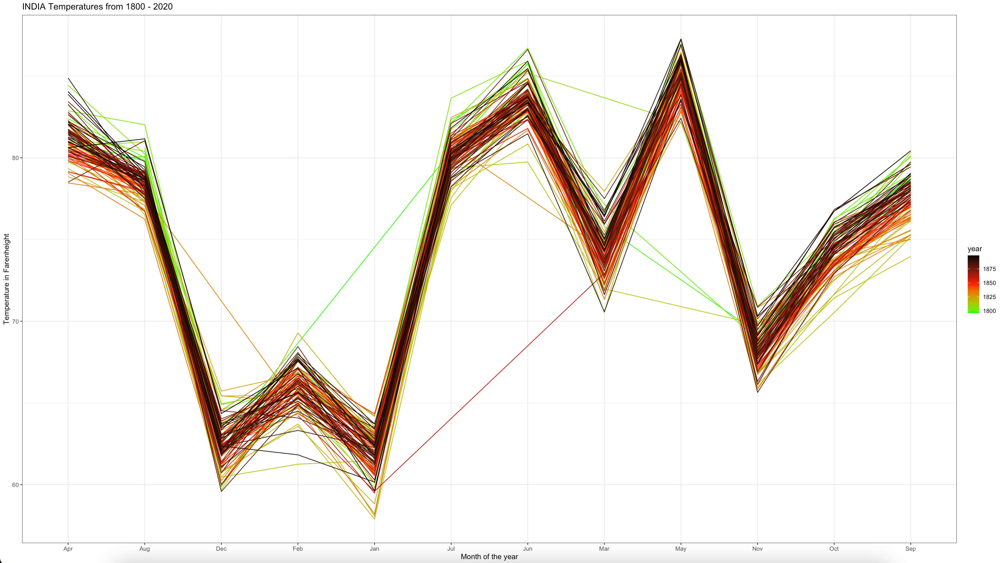
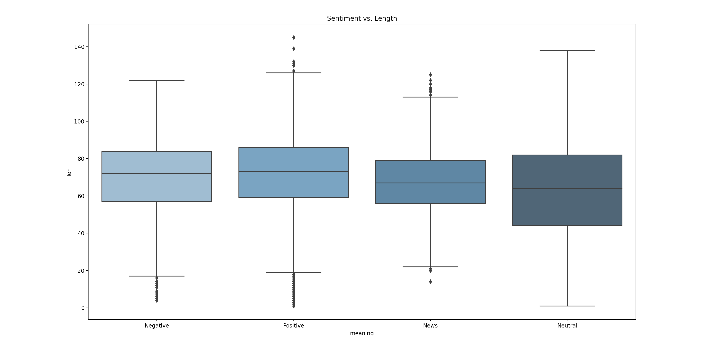
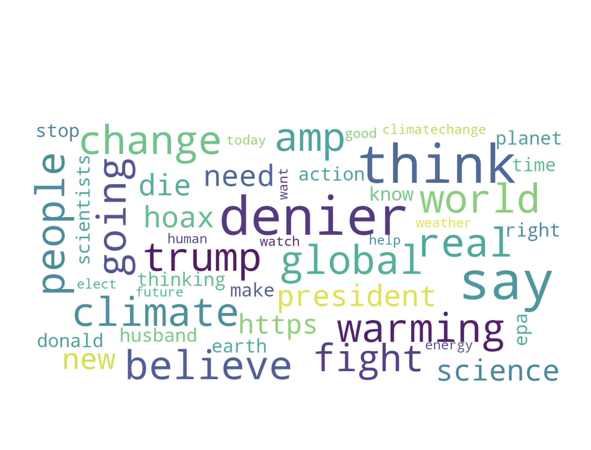
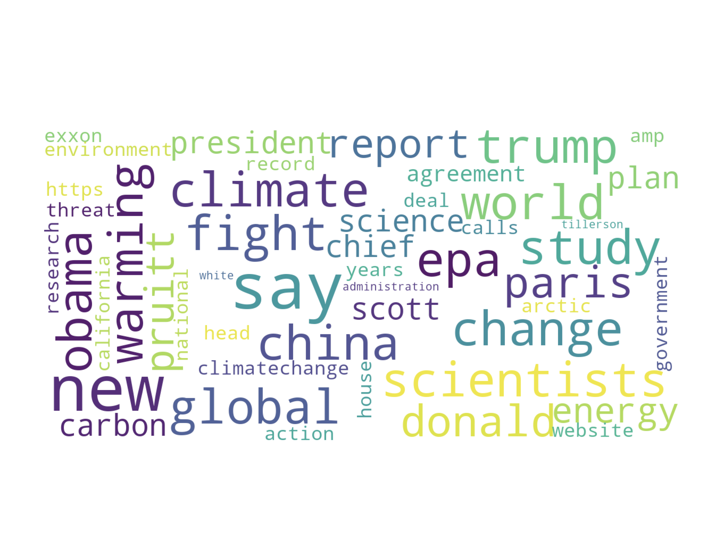

EXPLORING DATA.
1. Data Exploring with R - Numeric
Upon getting the clean datasets for both India and USA temperatures over the past two hundred years, a simple visualization can be performed by noticing the trends of the high and low temperatures over the years and cross the month. The style of the x axis are the months in alphabetical order. The plots are showcased in different temperatures (Y axis) to showcase that both the datasets work.

Figure: USA_Chart.png | Note: Temperature in C | Code: Shown in Data Cleaning ("CODE: R Cleaning - Country")

Figure: India_Chart.png | Note: Temperature in F | Code: Shown in Data Cleaning ("CODE: R Cleaning - Country")
These plots was coded in R using the library ggplot. The overall aim of these graphs of showcasing the various trends of USA temperatures over 200 years. Please make a note that the lows are during January (winters) and the highs are during July (summers) and May (only for India).
2. Data Exploring with Python - Text (CSV)
Upon cleaning the data there are many interesting plots that can be plotted to understand the relationship between sentiment and the message of the tweets.
First is a pie char depicting the % of positive, negative, neutral, and news tweets.

Figure: Percent_Sentiment.png | Code: Shown in Data Cleaning ("CODE: Python Cleaning - Tweets")
The same information above can be showcased in a bargraph. With this, the number of tweets by sentiment category can be shown below.

Figure: Sentiment_Vaues.png | Code: Shown in Data Cleaning ("CODE: Python Cleaning - Tweets")
Next, a histogram can be produced, showcasing the different length of tweets vs. the sentiment category. The result of this graph showcases any outliers that may be in the dataset.
Figure: Sentiment_Histo.png | Code: Shown in Data Cleaning ("CODE: Python Cleaning - Tweets")
Finally, with the the twitter text (after cleaning), a word cloud can be implemented with the help of CountVectorization (CV). CV outputs the frequency of the words and using the the wordcloud library, the tweets without stopwords can generate the top most words used in each sentiment category. The code to generate the wordclouds can be viewed below.
CODE: Python WordCloud

Figure: Negative Sentiment Word Cloud
Figure: Positive Sentiment Word Cloud

Figure: Neutral Sentiment Word Cloud
Figure: News Sentiment Word Cloud
3. Data Exploring with Python - Text (JSON)
Much like the python code used to gather the tweets, similar word clouds can be built for understanding the various News. The wordcloud represents the various weighted frequency within the headlines and first sentence of each headline.